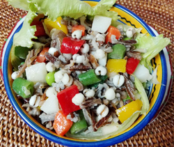

ハト麦とワイルドライスの
サラダ
サラダ
- 調理時間：60 分
- （一人当たり）
- カロリー：418.5kcal
- たんぱく質：15.4g
- 脂質：12.8g
- 炭水化物：62.2g
- 塩分：1.4g


＜2人分＞
- ・ハト麦
- 1/4カップ
- ・水
- 100ml程度
- ・塩
- ひとつまみ
- ・ジャガイモ（角切り）
- 1個
- ・ニンジン（角切り）
- 1/3本
- ・サヤインゲン
（1cm幅に切る） - 2本
- ・枝豆
- 80g
- ・パプリカ（角切り）
- 各1/8個
- ・レタス
（食べやすい大きさにする） - 2枚
☆ハト麦を炊く
【サラダの具】
- ・ワイルドライス
- 1/2カップ
- ・水
- 適量
- ・塩
- ひとつまみ
- ・バルサミコ酢
- 大さじ1
- ・ゴマペースト
- 大さじ2
- ・砂糖
- 小さじ1
- ・醤油
- 小さじ1
- ・塩、コショウ
- 適宜
☆ワイルドライスを炊く
【ドレッシング】


- 【ハト麦を炊く】
1.ハト麦は洗って、水に30分以上浸水した後、ザルにあげて水を切る。
2.鍋にハト麦、水、塩を入れて、フタをして火にかける。沸騰したら強火で5分。とろ火で15分炊く。
3.柔らかく炊けたら、火からおろして10分程、蒸らす。サラダ用に冷ます。 - 【ワイルドライスを炊く】
1.ワイルドライスは洗って、ザルにあげて水を切る。
2.鍋にワイルドライスとひたひたの水、塩を入れて、フタをして火にかける。沸騰したら弱火にして茹でる。
3.白い花のように割れてきたら火を止め、水をきる。サラダ用に冷ます。 - 【野菜の下準備】
・ジャガイモ、ニンジン、サヤインゲンは切り、それぞれ茹でる。
・枝豆は茹でて、鞘から取り出す。
・パプリカは角切りにする。
・レタスは食べやすい大きさに手でちぎる。 - 【ドレッシングをつくる】
材料をよく混ぜ合わせる。 - 【仕上げる。】
レタス以外の材料をドレッシングで和える。お皿にレタスをしき、盛り付ける。
ハト麦とワイルドライスのサラダ
私たちが主食としている穀類は貴重なエネルギー源です。主食のお米はもちろんですが、その他にも麦や雑穀など、さまざまな種類があります。今回はその中でも「ハト麦」を使ったレシピです。
ハト麦は、「麦」という文字がつきますが、小麦の仲間ではなく、数珠玉の仲間です。漢方では、お茶や化粧水の材料として使われたり、イボ取りの妙薬として知られ、排毒を促し、むくみをとり、美肌効果が信じられてきました。
ハト麦は、雑穀の中では粒が大きいので食べごたえがあります。炊いたハト麦は小分けにして冷凍保存しておくと便利です。サラダやスープ、炒め物にしても楽しめます。